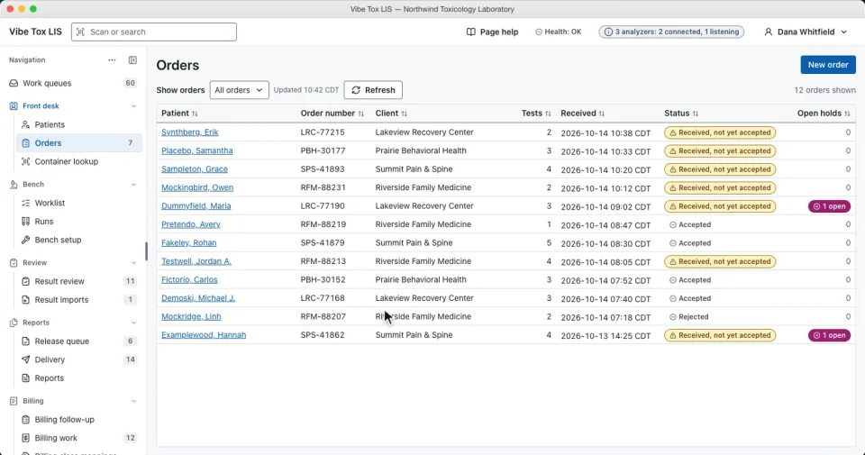
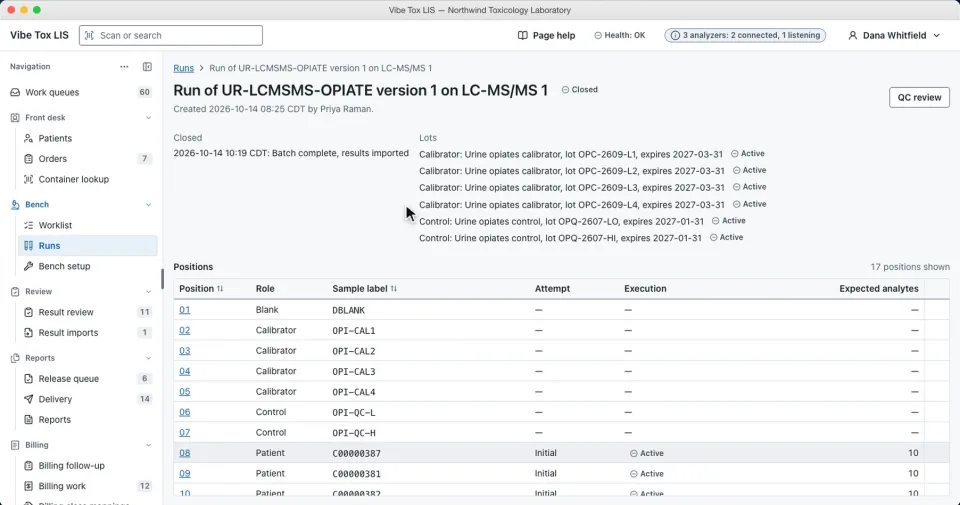
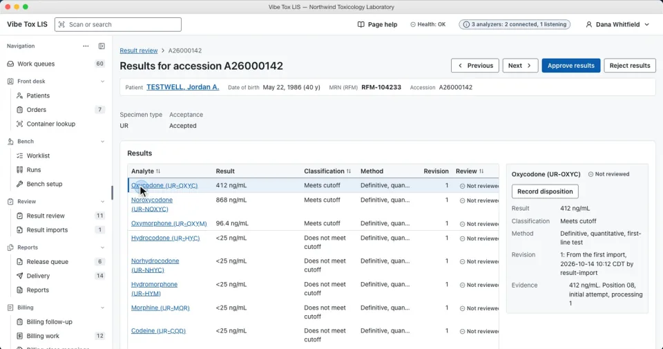
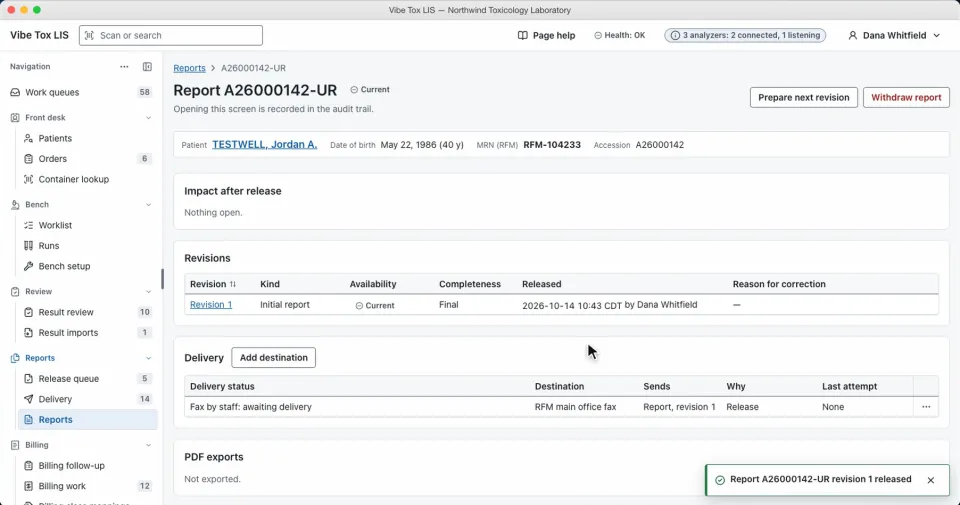
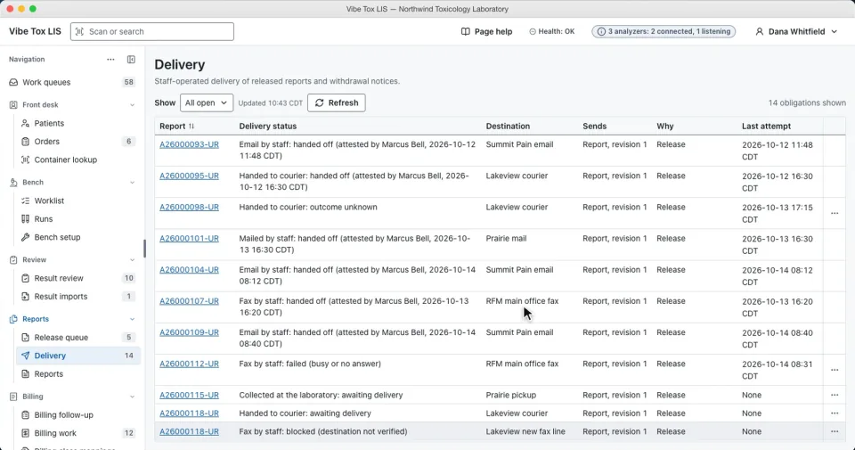
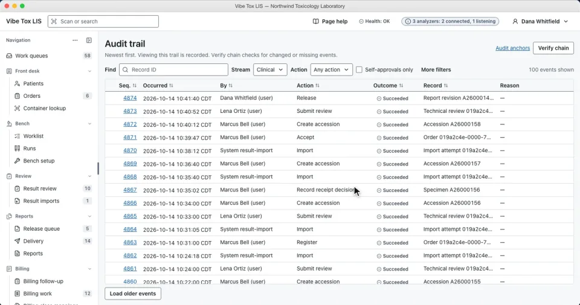

Free and open source · GPL-3.0-only
Your laboratory.
Your computer.
Your control.
A laboratory information system for small US clinical toxicology labs. One connected workflow, from the first order to the final report, on a computer the lab owns.
- Works without internet
- No server to run
- Backup and export included
In development. Not clinically validated or ready for patient reporting.
Meet Vibe Toxicology LIS.
A two-minute walkthrough of the application,
from order to report and beyond.
Follow the work.
Keep the history.
Each stage of the laboratory’s work is connected, with identity, quality control, and authorization checks along the way.
-

Order & accession
Orders, as the clinic sent them
Tests, diagnoses and supporting evidence are recorded exactly as supplied, never filled in. Receiving a specimen creates the accession and prints its barcode label.
-

Bench
Runs with their calibrators and controls
Worklists gather waiting specimens for each method. Results arrive from ASTM and Olympus AU400/AU640 analyzers and from LC-MS/MS result files, and quality control is recorded.
-

Review
Every result technically reviewed
Results appear with their method, classification and provenance. A failed QC or an identity question holds the result, and each approval records who reviewed it and when.
-

Release
Released reports are versioned
Release rechecks every hold at the moment an authorized person releases the PDF report. A correction creates a new revision and keeps the earlier one.
-

Deliver & bill
Handoffs with their evidence
Each fax, email, mail, courier or pickup is logged with the evidence available, never a bare “delivered”. Billable services derive from the work performed, not from positive results.
-

Audit
A tamper-evident audit trail
Every change and every view of sensitive data is recorded and attributed to a personal account. The trail can verify its own chain.


Screens from the presentation recording, with demo data and a mocked engine. Select a screen to open it at full size.
The lab’s data.
The lab’s choice.
Core laboratory work belongs on the laboratory’s own computer, with offline operation and a clear way to take its data with it.
- Local by design
- A standalone desktop application with no server to run. Analyzers can send results while the app is open, including while users are signed out.
- Backup and exit included
- Encrypted backups to the lab’s own disk, NAS or USB drive, restore tests, and a complete export. None of it needs a hosted service.
- Every action is attributed
- Personal accounts with two-factor sign-in or a security key, roles, and configurable separation of duties, including a one-person mode.
- Hosted services are optional
- A clinic portal, off-site backup, secure delivery, and EHR interfaces are separate future proposals. They would only relay copies; the LIS remains the system of record.
Run it from source.
Unsigned development installers for Windows, macOS and Linux are on the releases page. Developers can also build the application from source.
You will need
- Rust through rustup; the repository pins its toolchain
- Node.js 24 and npm
- The Tauri 2 prerequisites for Windows, macOS or Linux
git clone https://github.com/gabalint/vibe-tox.git
cd vibe-tox
npm ci
npm run tauri devOpen-source development.
Clear about what’s next.
This is an early development project. The repository contains the source, research, architecture, and verification records.
| Available in development | Still ahead |
|---|---|
| Order-to-report workflow | Validation with a partner laboratory |
| Local backup, restore, and export tools | Signed installers and production verification |
| A development build running on macOS; Windows and Linux are targets | Decisions on additional workstations and optional hosted services |
| GPL-3.0-only source and project documentation | Trademark and remaining project governance decisions |
License
Licensed under GNU GPL version 3 only (GPL-3.0-only). Commercial use and redistribution are permitted. Distributors must preserve the required notices, license covered works under GPLv3, and provide corresponding source as the license requires. Third-party material retains its own terms.
Development disclaimer
This project is vibe coded: developed with substantial AI assistance. Reasonable effort has gone into research, planning, analysis, review, and testing. That effort does not guarantee correctness, security, regulatory compliance, or fitness for clinical use. Built and tested on synthetic data; not clinically validated or ready for patient reporting.
Provided as is, with GPLv3’s warranty exclusions and liability limitations, subject to applicable law and written agreements. This notice does not change the license. Read the full disclaimer.
Explore the work behind the workflow.